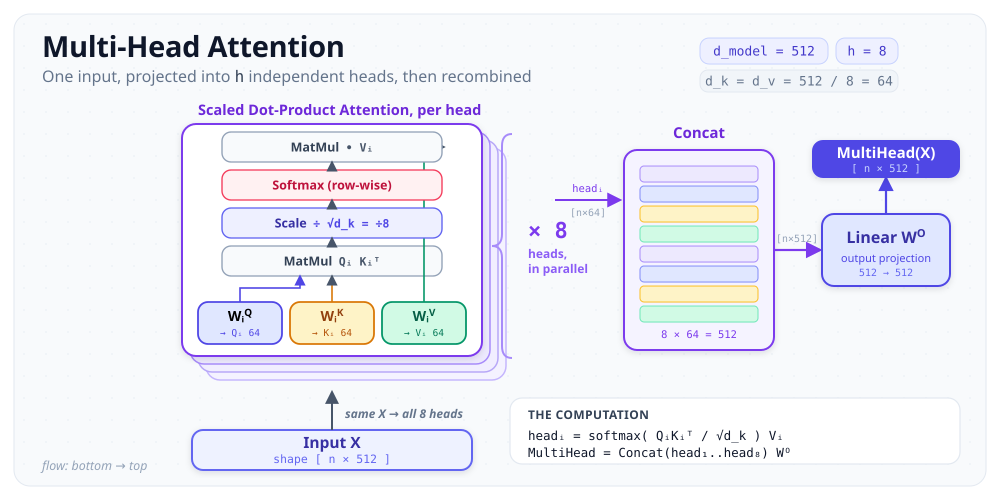
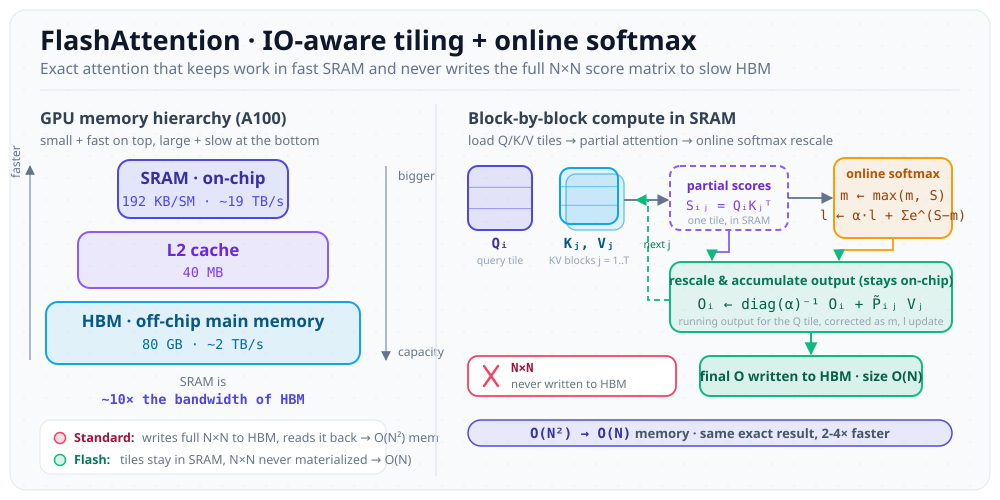
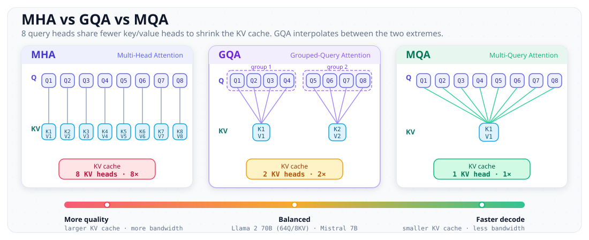
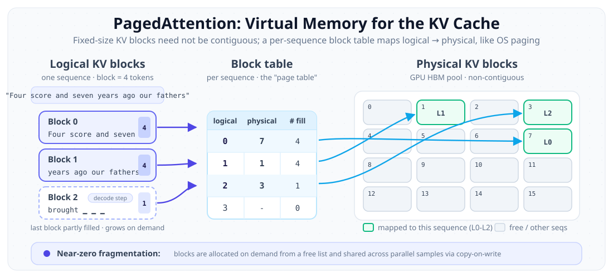

There are maybe four or five papers in the attention space that genuinely changed how we build and serve LLMs. Not incremental stuff, not "we got 0.3% better on MMLU" papers. I mean the kind of work where you read it and your mental model of the entire stack shifts. I want to walk through four of those papers, from the original multi-head attention all the way to PagedAttention, because honestly, understanding how these fit together is the difference between "I use transformers" and "I understand why my GPU is on fire."
Quick context on me: I am a contributor to vLLM, did GSoC at CERN, and spend most of my time thinking about how to make inference go faster without setting money on fire. So this is going to be pretty systems-heavy. Fair warning.
1. Multi-Head Attention: Where It All Started
The thing is, before 2017, sequence modeling was stuck in this sequential bottleneck. RNNs processed tokens one at a time. LSTMs helped with gradients but you still could not parallelize across time steps. Then Vaswani and the Google Brain team dropped "Attention Is All You Need" and basically said: what if we just throw away recurrence entirely and let every token look at every other token in parallel?
The core mechanism is elegant. You take your input and project it into three separate spaces: queries (Q), keys (K), and values (V). The attention score between any two positions is just the dot product of the query at one position with the key at another, scaled by 1/sqrt(d_k). That scaling factor matters more than people think. Without it, for large d_k, the dot products grow large in magnitude, pushing the softmax into regions with vanishingly small gradients. The softmax over these scores gives you attention weights, and you use those to take a weighted sum of the values.

What really blew my mind when I first read this paper was the multi-head part. Instead of doing one big attention function with d_model=512 dimensions, they split it into h=8 heads, each operating on d_k=64 dimensions. Each head learns to attend to different types of relationships. One head might track syntactic dependencies, another semantic similarity, another positional patterns. And because they all run in parallel, the compute cost is roughly the same as single-head attention with the full dimensionality.
The formula, for the record:
Attention(Q, K, V) = softmax(QK^T / sqrt(d_k)) V
MultiHead(Q, K, V) = Concat(head_1, ..., head_h) W^O
where head_i = Attention(Q W_i^Q, K W_i^K, V W_i^V)This paper is nearly nine years old and it is still the foundation of every single large language model. Every mechanism I talk about below is either optimizing this computation, changing how it is structured, or managing the memory it produces.
2. FlashAttention: The IO-Awareness Revolution
For years after the transformer paper, everyone was focused on reducing the compute complexity of attention. Linear attention, sparse attention, low-rank approximations. All these methods tried to avoid the O(N^2) FLOPs. Honestly, they were solving the wrong problem.
Tri Dao figured out that attention is not compute-bound. It is memory-bound. The bottleneck is not multiplication, it is moving data between GPU memory hierarchies. On an A100, you have 80GB of HBM (High Bandwidth Memory) running at about 2 TB/s, and then each streaming multiprocessor has about 192KB of SRAM that is dramatically faster. The naive attention implementation writes the entire N x N attention matrix to HBM, reads it back for the softmax, writes the result again, reads it back for the value multiplication. That is a lot of round trips to slow memory for a matrix that you only need transiently.

The key insight of FlashAttention is tiling. You load blocks of Q, K, V into SRAM, compute the attention for that block, and accumulate the result without ever writing the full attention matrix to HBM. The tricky part is softmax, because softmax requires the max and sum over the entire row, but you are processing in blocks. Dao uses the online softmax trick (from Milakov and Gimelshein, 2018) to compute softmax incrementally, maintaining running statistics as you process each block.
The results are staggering. Memory usage drops from O(N^2) to O(N) because you never materialize the full attention matrix. Wall-clock speedup is 2 to 4x on realistic sequence lengths. And because it is exact, you can drop it into any existing model without retraining.
FlashAttention 2, published about a year later, pushed things further. Better work partitioning across warps within a thread block, reduced non-matmul FLOPs, and better parallelism across the sequence length dimension. The result: 50 to 73% of theoretical maximum FLOPs on A100, hitting around 225 TFLOPs/s. For context, most GEMM-heavy workloads struggle to get past 60% utilization, so reaching 73% with a fused attention kernel is remarkable.
The thing is, FlashAttention changed the conversation entirely. Before it, the research direction was "let us find cheaper alternatives to attention." After it, the question became "can we just make attention itself fast enough?" And the answer turned out to be yes.
3. Grouped Query Attention: The KV Cache Bandwidth Fix
FlashAttention solved the training and prefill story beautifully, but inference has a different problem. During autoregressive decoding, you generate one token at a time, and you need to keep around the key and value tensors from all previous tokens. This is the KV cache, and it grows linearly with sequence length and batch size. For a 70B parameter model serving long contexts, your KV cache can easily eat 30 to 40 GB of GPU memory.
The bandwidth issue is even worse. Every decoding step, you need to load the entire KV cache from HBM to compute attention for the new token. With standard multi-head attention, you have separate K and V projections for every single head. That is a lot of memory to move around for what is essentially a single vector-matrix multiply per head.
Noam Shazeer proposed Multi-Query Attention (MQA) back in 2019: what if all query heads share a single set of K and V heads? This slashes the KV cache size by a factor of h (the number of heads) and proportionally reduces the memory bandwidth required during decoding. The problem is that MQA degrades model quality. You are forcing all those query heads to work with the same key-value representation, and that is a significant information bottleneck.

Grouped Query Attention is the sweet spot. You divide your h query heads into G groups. Each group shares one set of KV heads. So instead of h KV heads (MHA) or 1 KV head (MQA), you have G KV heads. Ainslie et al. showed that GQA with 8 KV groups on a model with 64 query heads achieves quality nearly indistinguishable from full MHA while getting inference speeds close to MQA.
What really blew my mind about this paper is the uptrain recipe. You do not need to train a GQA model from scratch. You take an existing MHA checkpoint, mean-pool the KV projection weights within each group, and then continue pretraining for roughly 5% of the original compute budget. That is it. You convert an MHA model to GQA without starting over.
The math on the memory savings is straightforward. For Llama 2 70B with GQA-8: KV cache per token = 2 (K and V) x 8 (KV heads) x 128 (head dim) x 80 (layers) x 2 (bytes for fp16) = about 2.6 MB per token. With full MHA that would be 8x larger. When you are serving thousands of concurrent requests with long contexts, that 8x factor is the difference between fitting on one node or needing two.
4. PagedAttention: Borrowing Paging from the OS
This one is personal because I contribute to vLLM, the system built on PagedAttention. And honestly, this paper is one of the best examples I have seen of taking a well-understood systems idea and applying it to a completely different domain.
Here is the problem. When you serve an LLM, each request has a KV cache that grows as you generate tokens. You do not know the final sequence length in advance. So you either pre-allocate for the maximum possible length (wasting huge amounts of memory on short sequences) or you allocate dynamically and deal with fragmentation. In practice, existing systems like FasterTransformer pre-allocated contiguous memory blocks, and utilization was terrible. Wonjoon Kwon et al. measured that existing systems waste 60 to 80% of KV cache memory to fragmentation and over-reservation.
The insight comes straight from operating systems. How does your OS handle the same problem for process memory? Virtual memory with paging. Each process thinks it has contiguous memory, but the OS maps virtual pages to physical frames that can be scattered anywhere in RAM, tracked by a page table.

PagedAttention does exactly this for the KV cache. Instead of allocating one big contiguous chunk per sequence, it divides the KV cache into fixed-size blocks (like pages). A block table maps each sequence's logical blocks to physical blocks in GPU memory. Blocks can be anywhere in the GPU memory space. When a sequence needs more KV cache, you just allocate a new block from a free list and update the table. When a sequence finishes, you return its blocks. No fragmentation. No over-allocation.
The throughput improvements are massive. Compared to FasterTransformer and Orca, vLLM with PagedAttention achieves 2 to 4x higher throughput without any changes to the model or any quality degradation. The near-zero waste of KV cache memory means you can fit more concurrent requests, which means higher utilization, which means better cost efficiency.
Working on vLLM has given me a deep appreciation for how much the serving layer matters. You can have the most efficient model architecture in the world, but if your memory management is naive, you are leaving half your GPU capacity on the table. The thing is, the attention mechanism and the system that manages its memory are not separate concerns. They are deeply intertwined, and PagedAttention makes that explicit.
How These Fit Together
Here is where it gets satisfying. These four mechanisms are not alternatives to each other. They operate at completely different levels of the stack, and a modern serving system uses all four simultaneously.
Multi-Head Attention defines the base computation: the mathematical operation that gives transformers their power. It is the "what" of attention. Grouped Query Attention modifies this computation at the architectural level, reducing the number of KV heads to make inference bandwidth-efficient while preserving quality. This is a model-level change baked in during training (or uptraining). FlashAttention is the hardware-aware implementation of whichever attention variant you are running. It does not change what you compute, only how you compute it, by respecting the GPU memory hierarchy. It is a kernel-level optimization. PagedAttention operates at the systems level, managing the memory that stores the KV cache produced by attention. It does not touch the attention computation at all. It is a memory management strategy.
Layer | Mechanism | What it solves
----------------|------------------|--------------------------
Math | MHA | Sequence modeling
Architecture | GQA | KV cache size / bandwidth
Kernel | FlashAttention | HBM IO bottleneck
System | PagedAttention | Memory fragmentationWhen you send a prompt to, say, a Llama 3 model served by vLLM: the model uses GQA (architectural choice, fewer KV heads). The attention kernel is FlashAttention (tiled, IO-aware, never materializes the N x N matrix). The KV cache produced by that kernel is managed by PagedAttention (paged, non-contiguous, copy-on-write capable). All four layers, working together.
The pattern I keep seeing across all of these is that the best ideas in ML systems come from borrowing concepts from other fields. FlashAttention borrows cache-aware algorithms from the database and HPC world. PagedAttention borrows virtual memory from operating systems. GQA borrows the idea of shared representations from, honestly, just good engineering intuition about parameter sharing. The transformer itself borrows the attention concept from neuroscience via Bahdanau's earlier work on neural machine translation.
If you are trying to work on ML systems, my honest advice is: do not just read ML papers. Read systems papers. Read database papers. Read OS textbooks. The next breakthrough in serving efficiency is probably sitting in some 1990s distributed systems paper, waiting for someone to notice the connection.